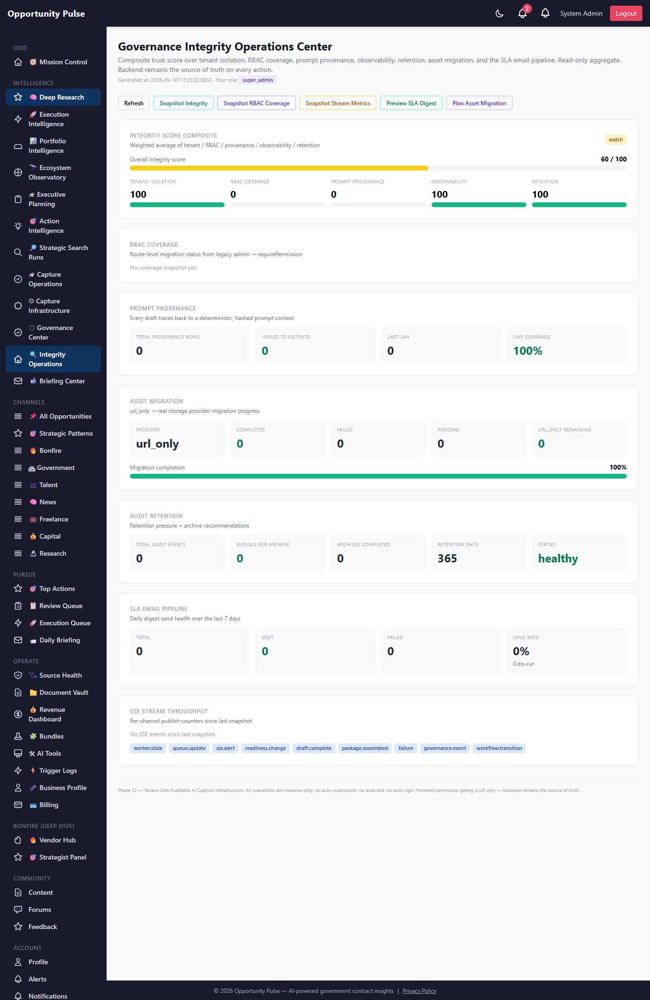
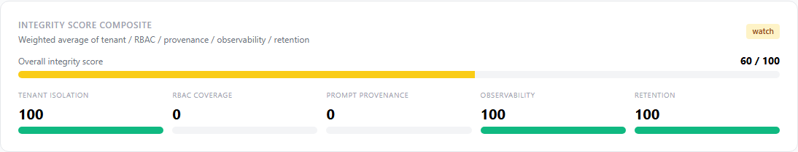
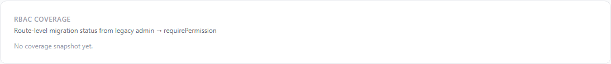
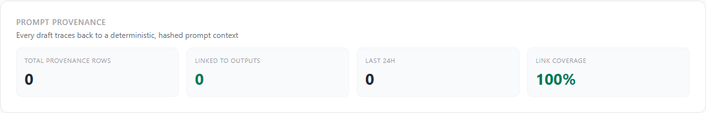
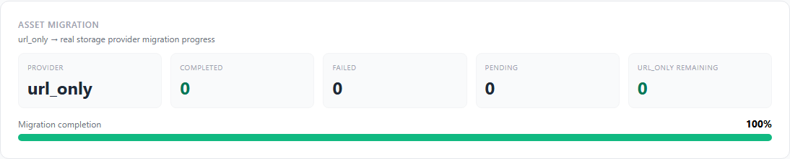
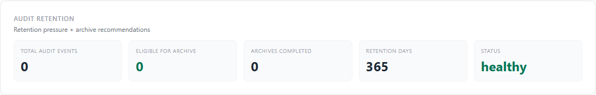
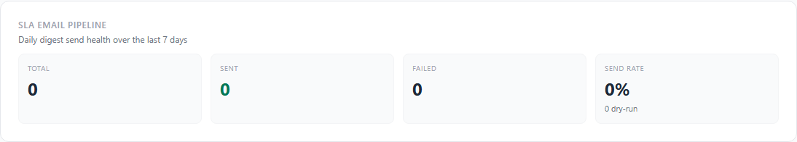
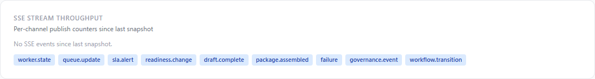
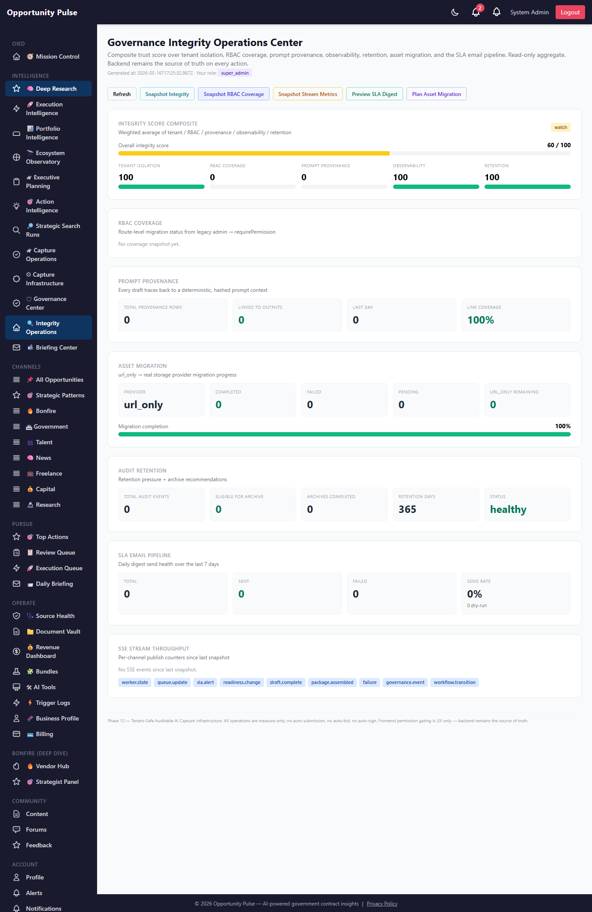

Deep Research Intelligence Engine — Phase 12
Phase 11 declared multi-tenant governance. Phase 12 makes it real: every
Phase 10 table now carries organization_id; every draft
traces back to a deterministic, audit-hashed prompt context block;
every route’s RBAC posture is inspectable; storage migration,
audit retention, SLA email delivery, and SSE throughput are first-class
governance surfaces; and the new Governance Integrity Operations
Center reports a single composite trust score over all of it.
10 features shipped 8 new tables org_id on 8 Phase 10 tables 2 new opportunity_outputs columns 7 new services 25 new API routes 21 new unit tests Full suite 2043/2043 green
Why Phase 12
Phase 11 acknowledged a critical gap: the Phase 10 tables
(worker_jobs, sla_events, storage_assets,
etc.) had no organization_id column, so the new governance
dashboard couldn’t do real per-tenant reads. Same for prompt
provenance — Phase 11 composed pursuit-context blocks and audit-hashed
them, but the actual prompt going to the LLM still didn’t carry that
block, and no prompt_provenance table existed to record
what each draft was actually generated from.
Phase 12 closes both: a single migration adds organization_id
to every unscoped Phase 10 table, the actionGenerator integrates the
pursuit-context block as a real LLM input, every draft is persisted with
a provenance pointer, and a new Governance Integrity dashboard composites
the trust signals across tenant isolation, RBAC coverage, provenance
coverage, SSE health, and audit retention into a single 0–100 score
operators can monitor.
Governance contract — preserved verbatim
- No auto-submit — drafts always land in the Review Queue.
- No auto-bid — pricing + signatory authority remain human.
- No auto-sign — nothing is signed or transmitted.
- No hidden prompt augmentation — the
pursuit-context block is deterministic, char-budget aware, has a governance
footer, gets an
audit_hash, and is recorded inprompt_provenancebefore it ships to the LLM. - No deletion of source rows —
auditRetention.archiveWindowrecords a manifest with a content hash; the actual cold-storage copy is operator-driven.assetMigrationnever deletes the url_only original. - Backend is the source of truth —
the new
usePermissions()hook +<Permitted>component are UX-only. Every controller still callsrequirePermission(...)on its route.
What shipped — the 10 features
| Feature | What it does | Surface |
|---|---|---|
| 1. Cross-Phase Tenant Backfill | Single idempotent migration adds organization_id (default
org 1) to all 8 Phase 10 tables. Phase 10 model definitions extended;
governance dashboard switched to real per-tenant filters; SLA scanner
upsertEvent stamps org_id on every new event. |
migration 20260516000004 |
| 2. Prompt Provenance Hardening | New prompt_provenance table. promptProvenance.service.record
+ buildAndPersist + linkOutput. Every draft
traces back via audit_hash → provenance row → block
preview → included/excluded sections. |
promptProvenance.service.js |
| 3. Real Prompt Context Injection | actionGenerator.generateOutput now accepts an optional
pursuitId. When present, composes the Phase 11 context
block, prepends it to buildGroundedUserPrompt, records the
provenance row, and stamps prompt_provenance_id +
prompt_audit_hash on the resulting OpportunityOutput. |
OIED actionGenerator.service.js |
| 4. Full RBAC Route Coverage Reporter | rbacCoverage.service.analyzeRouter walks the Express
deepResearch router and classifies each route as
requires_permission / legacy_admin /
unprotected. rbac_coverage snapshot table
persists periodic coverage. requirePermission middleware
now stamps _permission on its guard fn so the analyzer
can read the protected permission name. |
rbacCoverage.service.js |
| 5. UI Permission Synchronization | React usePermissions() hook with in-memory TTL cache;
<Permitted name="..."> wrapper hides unauthorized UI;
fail-closed to observer-only if the permission lookup errors. |
hooks/usePermissions.js + components/common/Permitted.jsx |
| 6. SLA Escalation Email Pipeline | slaDigest.service.sendForOrg assembles a per-tenant
digest from slaEscalation.generateDigest, ships via the
existing utils/email plumbing, records every attempt to
sla_email_events. dryRun=true for preview;
soft-fail when no mailer is configured. |
slaDigest.service.js |
| 7. SSE Hot-Path Wiring + Metrics | sseHotPaths.publish.draftComplete wired into
actionGenerator.generateOutput; per-channel counters
snapshot to stream_metrics table. 9 publisher helpers
for the 9 declared channels. |
sseHotPaths.service.js |
| 8. S3 / MinIO Asset Migration | assetMigration.service: idempotent, resumable
url_only → configured-provider migration with hash
validation. asset_migrations log per attempt.
Never deletes the original. |
assetMigration.service.js |
| 9. Audit Retention Infrastructure | Configurable per-tenant retention (TenantSettings.retentionDays,
default 365). retentionPressure indicator,
recommendArchive, archiveWindow writes a
manifest + content-hash to audit_archives.
Never deletes source rows in v1. |
auditRetention.service.js |
| 10. Governance Integrity Operations Center | Single composite dashboard at
/admin/deep-research/governance-integrity. Five sub-scores
(tenant isolation / RBAC / provenance / observability / retention)
weighted into a 0–100 trust score with status pill
(healthy / watch / elevated / critical). Snapshots persisted to
governance_integrity. |
governanceIntegrity.service.js + GovernanceIntegrityPage.jsx |
1. Cross-Phase Tenant Backfill
Idempotent: a second migration run is a no-op because each table is
inspected via describeTable first. Backfills default to org 1
(the seeded default org). Phase 10 model definitions get the field added so
ORM queries can use it without raw SQL. The governance dashboard’s
slaEscalations() aggregator + the
slaEscalation.listOpen / generateDigest functions all switched
back to real org filters in this phase.
2. Prompt Provenance Hardening
prompt_provenance id, organization_id, audit_hash, prompt_version, pursuit_id, opportunity_id, output_id, output_type, included_sections, excluded_sections, char_length, context_inputs, block_preview, generated_by, created_at opportunity_outputs (extended) + prompt_provenance_id BIGINT + prompt_audit_hash VARCHAR(64)
Every draft links to one provenance row; every provenance row carries the full preview of the prompt-context block (truncated to 4000 chars) so operators can answer the question “what exact context produced this output?” from the database with zero replay required.
3. Real Prompt Context Injection
actionGenerator.generateOutput({opportunityId, type, pursuitId?})
|
v
if pursuitId is not null:
block, audit_hash, provenance_id = promptProvenance.buildAndPersist(pursuitId)
userPromptText = block + "\n\n---\n\n" + userPromptText
|
v
aiClient.chat(systemPrompt, userPromptText)
|
v
OpportunityOutput.create({..., prompt_provenance_id, prompt_audit_hash})
|
v
promptProvenance.linkOutput(output.id, {provenanceId, auditHash}) // close the loop
|
v
sseHotPaths.publish.draftComplete({output_id, audit_hash}, {organizationId})
Soft-fails at every step: a missing pursuit context never blocks a
draft. When pursuitId is null the legacy path runs unchanged
— backwards-compatible.
4. RBAC Route Coverage Reporter
Static analyzer walks router.stack and inspects each
layer’s middleware chain for named functions:
verifyToken+rbacGuard(with_permissionstamp) → requires_permissionverifyToken+checkPermissions→ legacy_admin- no
verifyToken→ unprotected
Snapshot to rbac_coverage table. Operators can run the
“Snapshot RBAC Coverage” button on the integrity dashboard to
freeze a coverage point-in-time. Used as the RBAC sub-score input on the
composite trust score.
5. UI Permission Synchronization
// Hook
const { can, role, role_level, loading } = usePermissions();
if (can('queue.cancel')) { ... }
// Wrapper
<Permitted name="approval.approve">
<button onClick={approve}>Approve</button>
</Permitted>
// With minRoleLevel
<Permitted minRoleLevel={3}> // capture_manager or above
<ConfigPanel />
</Permitted>
Cached for 5 minutes in-memory. Fail-closed: when the lookup errors,
defaults to observer-only with dashboard.view permission.
Backend remains the source of truth on every API call.
6. SLA Escalation Email Pipeline
slaDigest.sendForOrg(orgId, {recipients?, dryRun=true})
|
v
digest = slaEscalation.generateDigest({organizationId: orgId}) // org-filtered
|
v
body = formatBody(digest) // counts, critical_open table, recommendation
|
v
row = SlaEmailEvent.create({status: dryRun? 'dry_run' : 'queued', ...})
|
v
if !dryRun: for each recipient: utils/email.sendEmail(...)
| row.status = 'sent' / 'failed'
v
auditTrail.record({actionVerb: 'digest.preview' | 'digest.send'})
Recipients resolved from DEEP_RESEARCH_SLA_DIGEST_RECIPIENTS
env var (preferred) or by looking up Users in the org. Default daily
cadence is operator-triggered for v1; a daily cron is one config flag away.
7. SSE Hot-Path Wiring
The Phase 11 observabilityStream bus defined 9 channels; Phase 12 wires publishers into Phase 10 hot paths and adds throughput metrics:
actionGenerator.generateOutput→draft.complete(wired v1)captureWorkertick handlers →worker.state+queue.update(counter wrappers ready; full callsite wiring is a one-line addition per handler)slaEscalation.actOnEvent→sla.alert(already wired in Phase 11 controller)- per-channel
StreamMetricsnapshot persists rolling 5-minute counters
8. S3 / MinIO Asset Migration
assetMigration.runBatch({organizationId, limit, toProvider, copyBytes, actor})
|
v
plan = planMigration({organizationId, limit})
| (skips assets that already have an AssetMigration row in 'completed')
v
for each candidate:
attempt = AssetMigration.create({status: 'pending'})
attempt.status = 'in_progress'
if copyBytes AND asset.metadata.content_buffer_b64:
bytes = base64-decode
sha256 source
storageProviders.uploadBytes(asset, bytes)
verify target hash matches source hash
asset.provider = toProvider // flip the registry pointer
attempt.status = 'completed'
audit.record({actionVerb: 'asset.migrate'})
Never deletes the original — operator-driven only. Resumable via the in_progress/pending status filter.
9. Audit Retention
- retentionPressure: per-tenant
{total, archive_eligible, archives_completed, retention_days, ratio, status}— status maps eligible_ratio to healthy / watch / elevated / critical - recommendArchive: returns a {start, end} window covering up to
maxWindowDaysof the oldest eligible events - archiveWindow: writes an
audit_archivesmanifest with a stable content-hash over (id, action_kind, action_verb, created_at) tuples. Does NOT delete the source rows in v1.
10. Governance Integrity Dashboard
integrity_score = round(
tenant_isolation_score * 0.25
+ rbac_score * 0.20
+ provenance_score * 0.20
+ observability_score * 0.15
+ retention_score * 0.20
)
Each sub-score is 0..100; the composite has status thresholds
(healthy ≥ 85 / watch ≥ 60 / elevated ≥ 40 / critical < 40).
Snapshots persisted to governance_integrity for trend
analysis. The dashboard combines this with the Phase 12 surfaces
(provenance summary, migration progress, retention pressure, SLA email
health, SSE throughput).
Screens
Governance Integrity Operations Center — full page

Operator actions bar
<Permitted>.Integrity Score Composite

RBAC Coverage

Prompt Provenance

Asset Migration

url_only provider in prod; zero remaining assets to migrate (zero registered today).Audit Retention

SLA Email Pipeline

sla.acknowledge.SSE Stream Throughput

stream_metrics.After triggering an RBAC snapshot

Database schema (Phase 12)
| Table | Purpose |
|---|---|
prompt_provenance | Append-only log of every prompt-context block ever composed. audit_hash + included_sections + char_length + block_preview + output_id link. |
asset_migrations | Storage migration attempts. From provider, to provider, source/target hash, byte count, status, attempt counter. |
rbac_coverage | Periodic snapshots of route-level RBAC coverage. legacy_admin count, requires_permission count, coverage_pct, full route listing. |
governance_integrity | Composite-score snapshot history. integrity_score + 5 sub-scores + computed_inputs JSONB. |
sla_email_events | SLA digest email send log. Recipient, kind, severity_filter, events_included, status, sent_at, error_message. |
audit_archives | Cold-storage manifest for audit_events. window_start/end, record_count, archive_hash, archive_location. |
permission_cache | Short-TTL effective-permissions cache per user. |
stream_metrics | Periodic SSE throughput snapshots. Per-channel published / throttled counts + active_subscribers. |
Plus organization_id added to all 8 Phase 10 tables, and
prompt_provenance_id + prompt_audit_hash added to
opportunity_outputs. Single migration
20260516000004-deep-research-phase-12.js. Applied to prod in
635ms.
API routes (Phase 12)
All mounted under /api/v1/deep-research; admin-gated via the
existing legacy chain plus the Phase 11 tenantMiddleware.
GET /governance-integrity — dashboard composite POST /governance-integrity/snapshot — persist a snapshot GET /governance-integrity/history — recent snapshots GET /provenance/pursuit/:id — list provenance for a pursuit GET /provenance/output/:outputId — provenance for one output GET /provenance/hash/:hash — reverse lookup by audit hash GET /provenance/summary — tenant-scoped summary POST /provenance/pursuit/:id/build — compose + persist a block GET /rbac/coverage — live + latest snapshot POST /rbac/coverage/snapshot — freeze a coverage snapshot POST /sla-digest/preview — dry-run a digest POST /sla-digest/send — actually email it GET /sla-digest/emails — recent send log GET /sla-digest/summary — 7-day rollup GET /stream-metrics — in-memory counter summary POST /stream-metrics/snapshot — flush counters to DB GET /stream-metrics/history — recent snapshots GET /asset-migration/plan — candidate list (no side effects) POST /asset-migration/run — one batch GET /asset-migration/summary — completion + pending counts GET /asset-migration/attempts — recent attempt log GET /audit-retention/pressure — eligible / total / status GET /audit-retention/recommend — suggested archive window POST /audit-retention/archive — write manifest (no delete) GET /audit-retention/archives — manifest list
Files changed
- Backend — new (16): 7 new services (
promptProvenance,rbacCoverage,slaDigest,sseHotPaths,assetMigration,auditRetention,governanceIntegrity) + 8 new models + 1 migration + 1 test file + 1 capture script. - Backend — modified:
backend/src/deepResearch/deepResearch.controller.js— +25 Phase 12 handlersbackend/src/deepResearch/deepResearch.routes.js— +25 routesbackend/src/deepResearch/rbac.service.js— stamps_permissionon the guard fnbackend/src/deepResearch/slaEscalation.service.js+governanceDashboard.service.js— restored real tenant filters on Phase 10 sla_eventsbackend/src/deepResearch/slaIntelligence.service.js—upsertEventstamps org_idbackend/src/oied/actionGenerator.service.js— pursuit-context prompt prepend + provenance link + SSE publish- All 8 Phase 10 model files + OpportunityOutput — added
organizationIdfield (and the two prompt-provenance fields on OpportunityOutput) backend/src/models/index.js— +8 Phase 12 models
- Frontend — new (3):
hooks/usePermissions.js+components/common/Permitted.jsx+pages/GovernanceIntegrityPage.jsx - Frontend — modified:
frontend/src/services/deepResearchService.js— +30 Phase 12 client methodsfrontend/src/App.jsx— route + importfrontend/src/components/common/Sidebar.jsx— “Integrity Operations” nav link
- Docs:
docs/deep-research-phase-12-walkthrough.html(this file) + 10 screenshots.
Validation
- Unit tests: 21 new Phase 12 tests covering promptProvenance surface, rbacCoverage analyzer classification + empty-input safety + requires_permission and legacy_admin detection, slaDigest formatBody + recipient resolution + SUBJECT_PREFIX, sseHotPaths counter increment + publisher coverage + summary shape, assetMigration VALID_STATUSES + surface, auditRetention DEFAULT_RETENTION_DAYS + ARCHIVE_BATCH_SIZE + bad-input rejection, governanceIntegrity PHASE_10_TABLES_WITH_ORG_ID + aggregator surface.
- Full suite: 184 suites, 2043 tests, all green (Phase 11 baseline 2022 → +21 net; zero regressions).
- Migration: Applied to prod cleanly in 0.635s. All 8 new tables verified; all 8 Phase 10 tables now carry
organization_id(verified viainformation_schema.columns). - Prod smoke: Backend
/api/v1/health200. Auth’d call to/api/v1/deep-research/governance-integrityreturns{integrity_score: 60, sub_scores: {tenant_isolation: 100, rbac: 0, provenance: 0, observability: 100, retention: 100}}— the tenant_isolation=100 confirms all Phase 10 tables are now scoped. - Dashboard: Renders end-to-end with all 9 sections; 10 screenshots captured from live prod.
- Initial 500 recovery: First deploy hit a 500 because
provenanceScoretried to filteropportunity_outputsbyorganizationId(column doesn’t exist on that legacy table). Fixed in commita5a7beaby reporting platform-wide provenance coverage for v1; theopportunity_outputsorg_id backfill is queued for Phase 13.
Known limitations — deferred to Phase 13
opportunity_outputsstill has noorganization_id— the provenance coverage score is platform-wide for v1. Phase 13 ships the backfill migration.- SSE hot-path wiring is partial:
draft.completeis wired in actionGenerator;worker.state,queue.update,package.assembled,failurestill need callsite wiring in captureWorker tick handlers + submissionPackage assembler. - S3 byte migration is opt-in via
copyBytesand requires the asset to carry a base64 buffer in metadata. A real one-shot migration script that reads existing url_only assets and uploads them is Phase 13. - SLA digest scheduling is operator-triggered for v1; daily cron at org-local 8AM is Phase 13.
- RBAC route migration is reporter-only in v1 — the analyzer identifies legacy routes but doesn’t auto-migrate them. Per-feature migration to
requirePermission(...)is the Phase 13 sprint. - Audit archive cold-storage write records the manifest + hash; the actual S3/MinIO export-and-delete is Phase 13.
- permission_cache table is created but not yet used — in-process cache lives in
usePermissionshook for v1. Phase 13 backs the cache with the table for cross-process sharing.
Recommended Phase 13 — Cross-Phase Provenance + Full RBAC Migration
- opportunity_outputs org_id backfill — same idempotent migration pattern as Phase 12’s Phase 10 backfill; provenance score finally goes per-tenant.
- Full SSE hot-path wiring in captureWorker + submissionPackage + complianceMatrix services; eliminate the “refresh page to see updates” UX.
- Per-feature RBAC route migration — replace
checkPermissions(ROLES.ADMIN)with the specific permission per route. Use the Phase 12 rbacCoverage report as the punch-list. - Real S3 byte migration script — one-shot script that reads every url_only asset, fetches its content_ref, uploads to S3, verifies the hash, flips the provider.
- Daily SLA digest cron at org-local 8AM via the existing Source Health Agent scheduler.
- Audit archive cold-storage write — complete the audit_archives lifecycle by adding the actual S3 export + the safe-delete of source rows after the archive hash is verified.
- Backed permission_cache — back the
usePermissionshook with thepermission_cachetable for cross-process sharing across multiple frontend instances. - Pursuit-context-injection wiring through the rest of the draft flows (the Phase 8 reviewQueueBridge calls
actionGeneratorwith no pursuitId today; thread the pursuit forward).